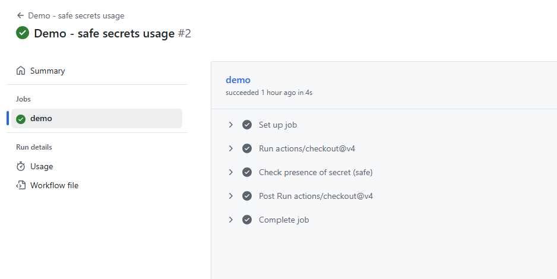

This project demonstrates how to integrate security checks into a CI/CD pipeline. I configured GitHub Actions to run linting, SAST (Static Application Security Testing), and dependency vulnerability scans on every push.
name: CI Security
on: [push]
jobs:
build:
runs-on: ubuntu-latest
steps:
- uses: actions/checkout@v2
- name: Run Lint
run: pip install flake8 && flake8 .
- name: Run Bandit (Python Security Linter)
run: pip install bandit && bandit -r .
- name: Run Trivy (Dependency Scan)
uses: aquasecurity/trivy-action@master
with:
scan-type: fs
severity: CRITICAL,HIGH
(Add a screenshot of your pipeline here for more impact)
